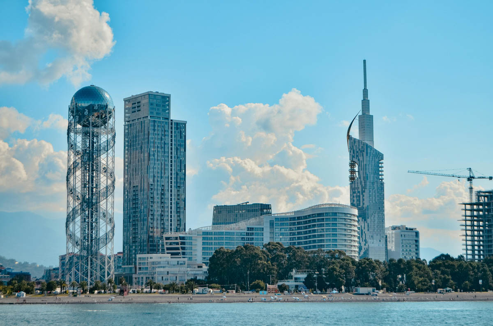

ყველაზე საინტერესო ადგილი
ჩემთვის ბათუმის ბულვარი განსაკუთრებით საინტერესო ადგილი იყო. იქ სეირნობა და ზღვის ხედის ყურება ძალიან სასიამოვნო იყო. ეს ადგილი აუცილებლად მინდა კიდევ ერთხელ მოვინახულო.
ჩემი ერთ-ერთი საყვარელი მოგზაურობა იყო ბათუმში.
ბათუმში მოგზაურობისას ბევრი საინტერესო ადგილი ვნახე.
განსაკუთრებით მომეწონა ზღვის სანაპიროზე სეირნობა.

ბათუმში ჩემი საყვარელი ადგილებია:
ჩემთვის ბათუმის ბულვარი განსაკუთრებით საინტერესო ადგილი იყო. იქ სეირნობა და ზღვის ხედის ყურება ძალიან სასიამოვნო იყო. ეს ადგილი აუცილებლად მინდა კიდევ ერთხელ მოვინახულო.